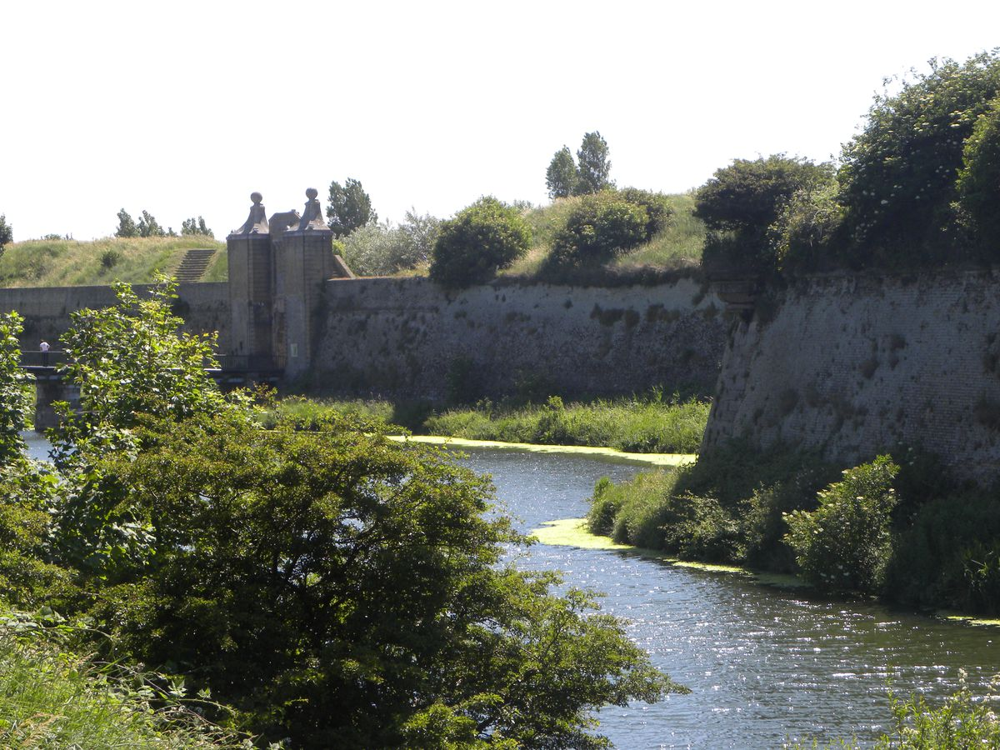
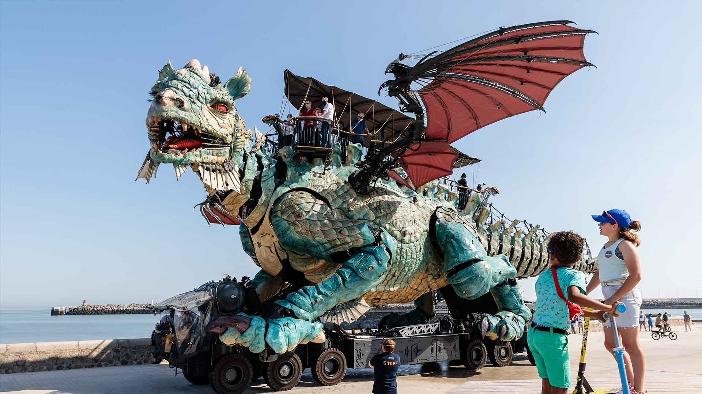

Présentation de l'événement
L’événement Histo’Roller est un événement organisé par l’IUT du Littoral Côte d’Opale, il regroupe les élèves ainsi que le personnel dans un parcours historique en roller à travers la ville de Calais. À la découverte des monuments emblématiques de la ville, vous pourrez (re)découvrir ses sites qui font le cœur de la cité. Une location de rollers est mise en place pour les personnes voulant participer mais n’ayant pas participé, une participation financière de 8€ est demandée. Durant l’événement, nous vous proposons de parcourir la ville pour voir des monuments tel que:
En premier, vous ferez le tour de la citadelle de Calais, une forteresse construite sur les ruines de l'ancien château médiéval datant du 13e siècle et qui défendait la ville de Calais. Un monument légendaire de la ville !
Ensuite, vous pourrez découvrir le Dragon de Calais, une construction colossale faite d’acier et de bois sculpté : la plus imposante et la plus technique jamais imaginée par François Delaroziere. Sa mobilité spectaculaire est inspirée des reptiles. Très expressif, il crache du feu, de la fumée et de l’eau sous différentes formes.
